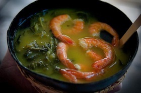

Culianaria Tipica do Pará
Considerada uma das culinárias mais “brasileiras” do País, a gastronomia do Pará tem a cultura indígena como sua maior influência, mas também carrega consigo traços das cozinhas portuguesa e africana. Seus ingredientes básicos são obtidos da exuberante Floresta Amazônica, como folhas e ervas, são uma forte herança deixada pelos índios da região.
Com mais de uma centena de espécies comestíveis, as frutas regionais dão origem aos doces que mais caracterizam a culinária local, dando um sabor exótico às deliciosas sobremesas que enriquecem a mesa paraense, como açaí, cupuaçu, pupunha, guaraná e a manga.
Cururu
O caruru é um cozido de quiabos ou carurus que costuma ser servido acompanhado de acarajé ou abará, de pedaços de carne, frango ou peixe, de camarões secos, de azeite de dendê e de pimenta.
Ingredientes
1 kg de quiabo picadinho
250 ml de leite de coco
100 g de amendoim torrado e sem casca
2 cebola pequenas
100g de camarão seco
1/2 limão
1/2 xícara de (chá) de azeite de dendê
Sal a gosto
Modo de Preparo
Coloque em uma panela o quiabo picado.
Bata 50 g de camarão no liquidificador com meia xícara de água e peneire.
O restante do camarão coloque na panela com o quiabo e meio limão espremido.
No liquidificador, bata o caldo do camarão, a cebola cortada em quatro partes, o leite de coco e o amendoim.
Bata bem.
Verifique o sal.
Em seguida, coloque na panela que está o quiabo o conteúdo do liquidificador.
Ligue o fogo médio e adicione o azeite de dendê e os camarões restantes.
Mexa com uma colher de pau por uns 25 minutos.
Depois é só servir.
Redes Sociais